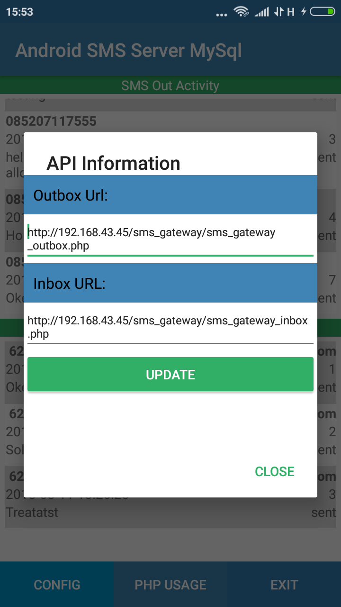

Post to SMS Server with PHP
Buka Menu CONFIG
- Lengkapi Outbox URL: dengan lokasi server file sms_gateway_outbox.php
- Lengkapi Inbox URL: dengan lokasi server file sms_gateway_inbox.php
- Kemudian tekan tombol UPDATE
Hingga seperti dibawah ini:

Untuk aplikasi server (PHP dan MySql) silahkan download disini:
sms_gateway.zip
Jangan lupa sesuaikan configurasi koneksi mysql database.
Selengkapnya...